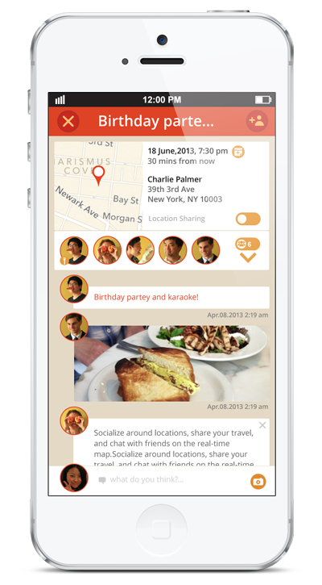
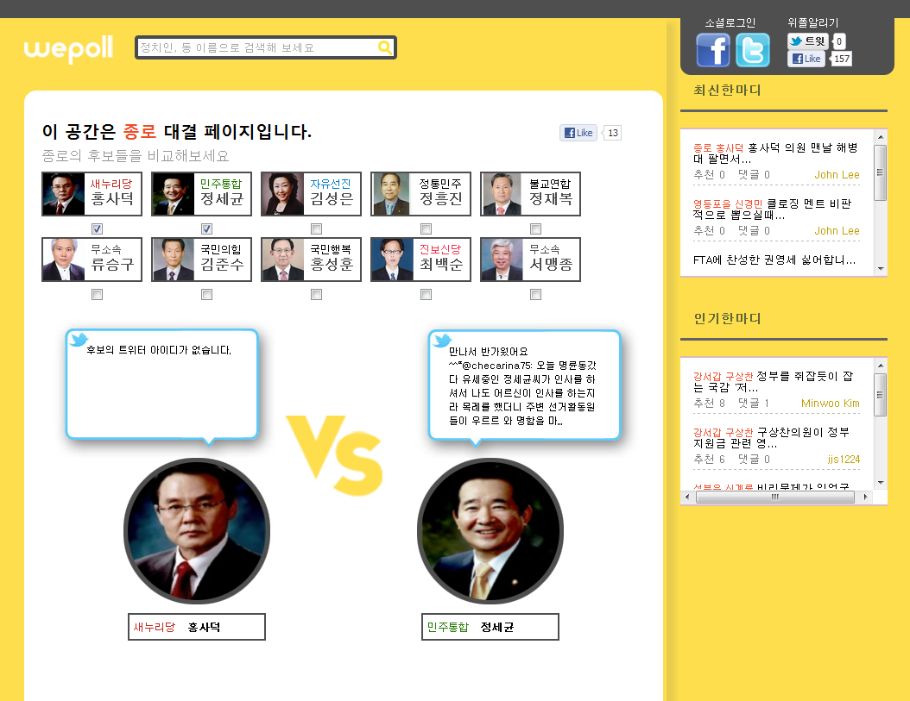
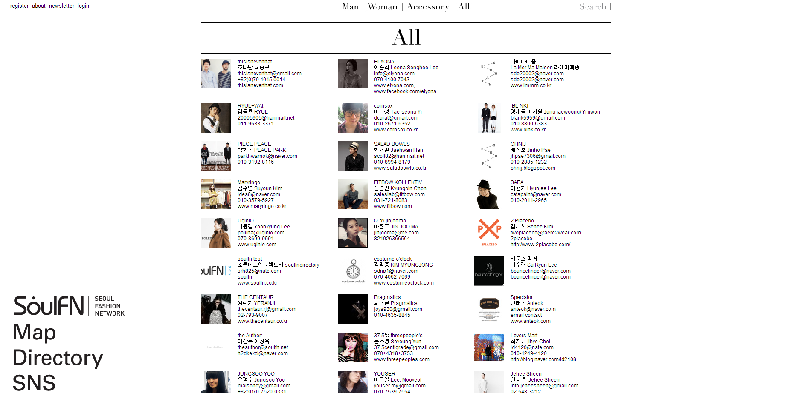
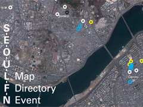
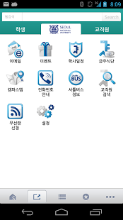

한재화 Jaehwa Han
— drunkhacker
웹 및 모바일 단말을 위한 서비스 구축의 시작과 끝, front와 backend 모두를 위해 사용되는 기술들에 관심이 있고 공부하려고 하는 프로그래머입니다.
- drh@snu.ac.kr
- cell
- blog
- http://blog.drunkhacker.me
- github
- http://github.com/drunkhacker
경력
Experiences2012.7 - 2013. 12 Lead Engineer at easi6, Inc.
2012.8 - 2013. 1 Visiting scholar at IBM Research Lab, Austin, TX
학력
Education-
2013. 2. 서울대학교 컴퓨터공학 석사 (실시간시스템)
2010. 2. 서울대학교 컴퓨터공학 학사 cum laude
2005. 2. 서울 영신고등학교 졸업
프로젝트
ProjectsDoors & Dots 2013. 4. http://doorsndots.com
— Main Programmer, Dev. Team Leader
친구끼리 약속을 생성하고 그 모임에 대한 정보를 공유하는 모바일 서비스입니다. 약속시간 30분전에 서로의 위치를 지도에서 공유하는 기능, 도착 예상시간과 사용중인 교통수단을 예측하는 기능이 들어가있으며 iOS에서 돌아가는 native app.으로 개발하였습니다.
- Frontend
-
- Cocoa Touch
- CoreData
- HTTP + COMET (AFNetworking 이용)
- Backend
-
- Play! Framework
- MySQL
- MongoDB
- Redis
- RabbitMQ
- Akka Actor
IBM Mobile First 2013. 1. http://www.ibm.com/mobilefirst/us/en/
— iOS Client Programmer
기업의 서비스를 모바일 단말에서 제공하거나 모니터링하기 위한 엔터프라이즈 솔루션을 개발하는데에 참여했습니다. Open Source stack을 적극적으로 활용하여 Backend 및 Frontend를 구성하였고, iOS 클라이언트 프로그래머로써 현재 기업이 운영중인 서비스들에 대한 모니터링 프로그램의 프로토타입을 구현하였습니다.

- Frontend
-
- Cocoa Touch
- CoreData
- HTTP (AFNetworking 이용)
- APNS + WebSocket
- Backend
-
- Play! Framework
- Node.js
- MongoDB
- Curator
- RabbitMQ
Wepoll 2012. 4.
http://wepoll.or.kr— Backend Programmer, Dev. Team Leader
19대 총선을 위한 캠페인 사이트입니다. 내 지역구 찾기, 지역구 후보들간의 스탯 비교, 후보들 SNS 제공등을 통해 후보들을 제대로 알고 투표하자는 취지의 웹 서비스입니다. 기존의 단순 인명정보를 모아놓은데에 그치지 않고 후보들의 SNS 데이터, 법안 발의 데이터들을 종합하여 보여주고 그에 따른 메타정보들을 계산하여 보여줌으로써 좀 더 풍부한 자료를 유권자들에게 제공하고자 했습니다.
- Frontend
-
- HTML5 + CSS3
- jQuery
- OAuth2
- Backend
-
- Ruby on Rails
- MongoDB
- Web Crawling
SeoulFN 2012. 1. http://seoulfn.net
— Main Programmer
서울에 있는 디자이너 및 관련 행사장소, studio등을 구글 맵 위에 매핑을 통해 나타낸 실험적인 웹사이트입니다. 공간에 흩어져있는 여러 요소들을 지도위에 배열하고 데이터가 보여지는 형태를 고민한 웹사이트입니다.
- Frontend
-
- jQuery
- Google Map API
- Backend
-
- Ruby on Rails
- MongoDB
서울대학교 공식 모바일 앱 2011.9. Google Play store
— iOS, Andorid Programmer
서울대학교 중앙전산원과 함께 모바일 애플리케이션 시범사업에 참여하여, 서울대학교 구성원들을 위한 모바일 애플리케이션 개발사업에 참여하였습니다. 개인의 학사정보, 이메일, 각종 공지사항, 생활정보등을 서버와의 네트워크 통신을 통해 보여주게 하였고 iOS, Android 둘 다 네이티브 애플리케이션으로 작성하였습니다.
- iOS
-
- Cocoa Touch
- CoreData
- HTTP 통신 (ASIHTTPRequest 이용)
- IMAP
- Android
-
- Sqlite
- HTTP 통신 (AsyncTask 이용)
- IMAP
보유기술
Skillsweb service backend skills
Ruby on Rails Good
2008년부터 Ruby on Rails를 통해 웹 서비스를 구축해온 경험이 있습니다. RoR의 큰 장점인 개발속도의 향상 외에도 유지보수, 구동 성능등에도 관심을 기울여 효율적인 백엔드를 구현하려 연구하고 있습니다.
Play! Framework Good
웹 환경의 변화에 따른 웹서비스의 요구사항의 order가 달라짐에 따라, reactive한 프로그래밍 모델과 그에 걸맞는 프레임워크인 Play! framework를 공부하고 있습니다. Doors & Dots의 백엔드는 Scala를 사용하여 Play! framework 위에서 작성되었습니다.
Node.js Good
비동기 프로그래밍 모델을 통해 반응성 증대를 기대할 수 있는 웹서버 백엔드를 작성할 때 유용하게 사용하고 있습니다. 또한 Coffeescript를 위시한 언어의 간명함 및 Full Javascript Stack을 이용, End-to-end 개발 언어를 통합하는 장점이 큰 프레임워크입니다.
web service frontend skills
AngularJS Intermediate
엄격한 MVW 개념의 분리를 통해 웹 클라이언트 역시 구조적인 프로그래밍의 장점을 십분 활용할 수 있어서 자주 사용하는 프레임워크입니다. AJAX사용을 내재화하여 SPA구현을 자연스럽게 가능하게 해주어 편리하게 사용하고 있습니다. Hybrid Mobile Application을 구현할 때의 주 도구로 사용할 수 있도록 공부중입니다.
HTML5 + CSS3 Intermediate
HTML5는 이제 웹 개발의 알파벳입니다. 플랫폼 독립적인 RIA를 구현하기 위해서 필수적으로 가지고 있어야 할 기술입니다. CSS3 역시 기존의 자바스크립트로 구현해야할 부분을 상당부분 커버함으로써 진정한 구조, 표현, 동작의 분리를 실현할 수 있게 합니다.
Grunt Good
웹 클라이언트 개발시 겪어야 할 반복작업들이나 자동화가 필요한 부분들을 커버함으로써 개발 효율을 많이 끌어올릴 수 있는 도구입니다. 또한 Frontend에서의 behavioral test를 수행할 수 있어서 TDD를 통한 웹 클라이언트 구현에 필수적인 도구로 자주 사용하고 있습니다.
mobile application development
iOS Good
iOS 3.x 때부터 Cocoa Touch 프레임워크 위에서 native iOS 애플리케이션들을 개발하였습니다. 기본적인 HTTP 네트워크 통신을 포함한 COMET 및 WebSocket 기술을 이용한 실시간 웹 통신 기술을 구현할 수 있습니다. 또한 CoreData를 이용한 내부 데이터베이스를 활용, 효율적인 Backend와의 통신을 구현하는 방법을 고민해왔습니다. 또한 모바일 기기에서의 UX에 대한 고민을 통해 좀 더 사용자 친화적인 모바일앱을 구현하려 노력하고 있습니다.
Hybrid Mobile App Intermediate
iOS기기와 Android기기의 모바일 시장 양분 및 Android 기기의 파편화로 인한 서비스 개발시간 증가를 해결하기 위해 Phonegap을 이용한 모바일 애플리케이션 기술을 연구하였습니다. Phonegap과 AngularJS를 이용하여 Native Mobile App.을 개발할 때와 같은 구조적 프로그래밍과 개발속도의 향상을 동시에 꾀하고 있습니다. 또한 Phonegap 개발에 참여하여 다른 프로그래머와 나자신의 편의성을 높이려 하고 있습니다.
languge proficiency
Ruby Good
작업하면서 필요한 간단한 툴들은 이 언어로 스크립트를 작성해서 해결합니다. 2008년부터 지금까지 오랫동안 써왔고 Reflection이나 Dynamic Code 실행등의 스크립트 언어의 특징을 십분 활용하는 프로그램을 작성할 수 있습니다.
Scala Good
함수형 프로그래밍의 기본 개념의 이해 및 Monad, Arrow 등의 대수 구조나 Type 추론등의 도구를 언어 안에서 적절히 활용하여 프로그램을 잘 작성할 수 있습니다.
C Good
C 언어를 이용하여 프로그램 작성이 가능합니다. *NIX 시스템의 기본 함수등을 활용하여 원하는 기능을 구현할 수 있습니다. 또한 이 언어를 이용하여 embedded system에 들어가는 firmware를 기기의 capability를 고민하면서 작성할 수 있습니다.
C++, Java Intermediate
이 두 언어로 프로그램을 작성할 수 있습니다. 언어에 특화된 고급 기술은 레퍼런스를 참조하면 사용할 수 있습니다.
English Intermediate
기본적인 의사소통 및 컴퓨터 프로그래밍 분야에 있어서 영어로 자유로운 토론이 가능합니다.
관심분야
Interestsweb & mobile service
LBS, SNS를 웹과 모바일의 형태로 효율적으로 전달하는것에 관심이 있습니다.
embedded system
8051 프로세서부터 임베디드 시스템 공부를 시작하였고, 요즘 많이 회자되는 Arduino, ARM등을 이용하여 Physical System과 Computing System을 연결하는 것에 관심이 많습니다.
3D printers
RepRap, Makerbot등 3D 프린터 프로젝트에 관심이 있습니다. RepRap 키트를 주문하여 3D Printer를 조립할 계획이 있습니다.
DevOps.
개발인력의 효율적 활용을 위해서는 배포의 자동화, 테스트 자동화등 여러 방면에서 Operation에 대한 자동화가 필요합니다. 이를 위해 Capistrano, Chef, Vagrant 등 개발환경 구축 및 배포환경에 대해 살펴보고 공부중입니다.
Functional Programming
프로그래밍을 할때 함수를 1st class citizen으로 취급하는 것은 매우 자연스럽고 잘 읽히는 코드를 작성할 수 있게 해줍니다. 또한 여러 대수구조가 프로그래밍 언어적 기반 위에서 구현되는 것에 대한 흥미가 많습니다.